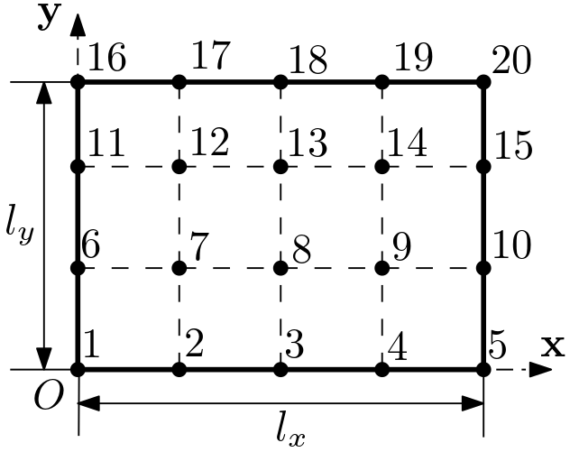
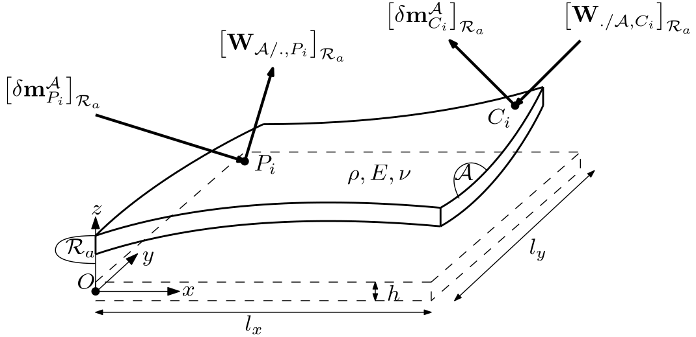
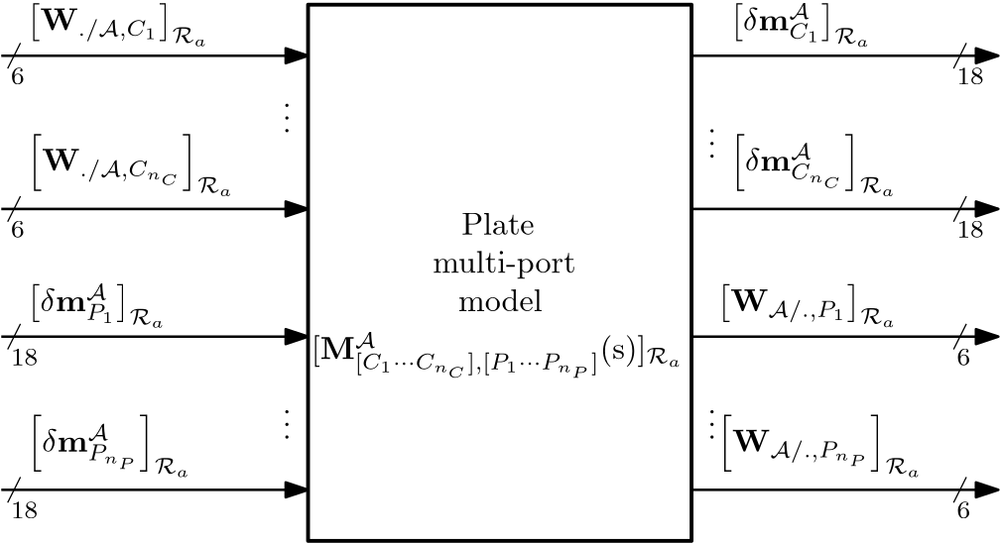
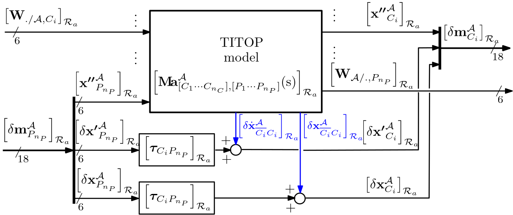
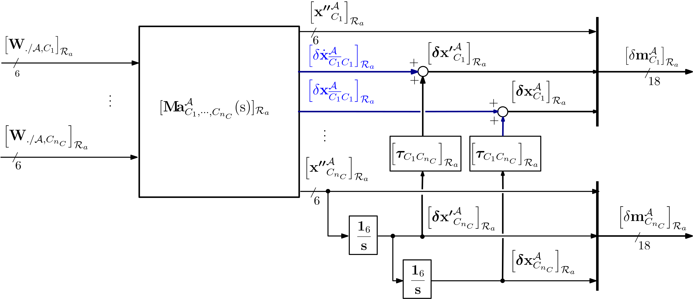
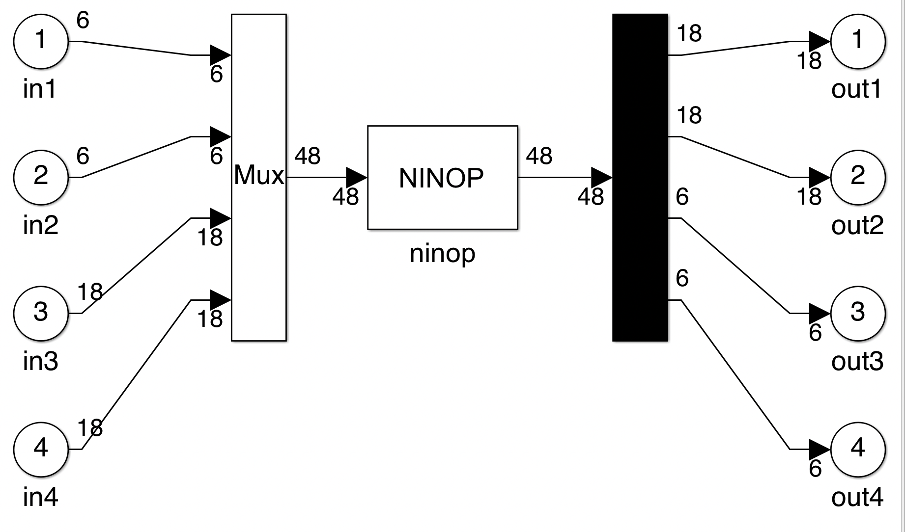

multi-port FEM Kirchhoff plate
Multi-port, linear Finite Element Model of a flexible Kirchhoff plate.
This block implements the $(18n_C+6n_P) \times (6n_C+18n_P)$ multi-port model of a flexible plate where $n_C$ is the number or child modes $C_i$, $i=1,\cdots,n_C$ (points of the plate connected to a child sub-structure(s)) and $n_P$ is the number of parent nodes $P_i$, $i=1,\cdots,n_P$ (points of the plate connected to a parent sub-structure(s)). To each of the nodes $C_i$ or $P_i$, corresponds a $18\times 6$ or a $6\times 18$ channel:
- at port $C_i$, $18\times 6$ channel is the transfer from the wrench applied to the plate at $C_i$ by the child substructure to the motion vector of $C_i$,
- at port $P_i$, the $6\times 18$ channel is the transfer from the motion vector of $P_i$ to the wrench applied by the plate to the parent substructure at $P_i$.
The obtained model is expressed in its reference frame $\mathcal{R}_a $.
This model uses a mesh of ($n_x\times n_y$) 4 node elements in the plate plane ($O,\mathbf x, \mathbf y$). The parent nodes and the child nodes are specified by their node numbers according to the node convention (the dimension of the plate is $l_x\,(m) \times l_y\,(m)$):
- node $0$ is the point ($0,0$) of the plate,
- node $n_x+1$ is the point $(l_x,0) $ of the plate,
- node $n_x+2$ is the point $(0, l_y/n_y)$ of the plate,
- node $2(n_x+1)$ is the point $(l_x,l_y/n_y) $of the plate,
- ...
- node $j(n_x+1)$ is the point $(l_x,(j-1)l_y/n_y$) of the plate,
- node $j(n_x+1)+1$ is the point $(0, jl_y/n_y)$ of the plate,
- ...
- node $(n_y+1)(n_x+1)$ is the point $(l_x,l_y)$ of the plate.
Example in the c ase $n_x=4$ and $n_y=3$:

Remark: this block is an alternative to the block multi-port flexible plate, more accurate but with a higher order model. Optional reductions are proposed in the dialog box:
- modal reduction of high frequency flexible modes (frequency greater than a prescribed value $\omega_{hf}\,(rad/s)$),
- modal reduction of the poles at $0$. Indeed when $n_P>1$, the loop closure constraints on the flexible degrees of freedom (position and velocity) lead to $6(n_P-1)$ poles at (or around) $0$..
If $n_P=0$, then the model is $18n_C\times 6n_C$ and includes $12$ integrators to model the $6$ rigid modes at the point $C_{n_C}$ (the last port).
See also: General notations, 1-port flexible body, 2 port flexible beam, N-port NASTRAN flexible body, multi-port flexible plate, Multi-Port_rigid_body
Contents
Description
Considering a plate $\mathcal{A}$ described in the following Figure

and characterized by
- the local frame $\mathcal{R}_a$,
- the dimensions: $l_x$, $l_y$, $h$,
- mass density: $\rho$,
- Young modulus $E$ and Poisson coefficient $\nu$.
Let us define:
- $\left[\mathbf{W}_{./\mathcal{A},C_i}\right]_{\mathcal{R}_a}$: the external wrench ($6\times 1$) applied to the beam at point $C_i$, expressed in $\mathcal{R}_a$,
- $\left[\delta\mathbf m^{\mathcal A}_{C_i} \right]_{\mathcal{R}_a}$: the motion vector ($18\times 1$) of the beam at point $C_i$, expressed in $\mathcal{R}_a$,
- $\left[\delta\mathbf m^{\mathcal A}_{P_i} \right]_{\mathcal{R}_a}$: the motion vector ($18\times 1$) of the beam at point $P_i$, expressed in $\mathcal{R}_a$,
- $\left[\mathbf{W}_{\mathcal{A}/.,P_i}\right]_{\mathcal{R}_a}$: the wrench ($6\times 1$) applied by the beam at point $P_i$, expressed in $\mathcal{R}_a$.
- [$\mbox{trans}_{\;x},\;\mbox{trans}_{\;y},\;\mbox{rot}_{\;z}$] for which the motion is assumed to be rigid (see also: Rigid dynamics)
- [$\mbox{trans}_{\;z},\;\mbox{rot}_{\;x},\;\mbox{rot}_{\;y}$] for which the motion is flexible (see also: Flexible dynamics) and computed using a $5$-th order polynomial approximation in $x$ and $y$ of the deflection $w(x,y,t)$ (see also: Finite element based N-Port model for preliminary design of multibody systems (F. Sanfedino et al.)).
Then, inversion channel function (see also: invio) is used to switch from child node to parent node.
The multi-port model of the flexible plate is described by the following block diagram:

When the motion vectors $\left[ \delta\mathbf m^{\mathcal A}_{P_i} \right]_{\mathcal{R}_a}$ and $\left[ \delta\mathbf m^{\mathcal A}_{C_i} \right]_{\mathcal{R}_a}$ are reduced to the first $6$ components of the dual acceleration vector $\left[\boldsymbol{ \mathbf{x''}}^{\mathcal A}_{P_i} \right]_{\mathcal{R}_a}$ and $\left[\boldsymbol{ \mathbf{x''}}^{\mathcal A}_{C_i} \right]_{\mathcal{R}_a}$, the TITOP model is denoted $\left[\mathbf{M\!a}^{\mathcal{A}}_{[C_1\cdots C_{n_C}],[P_1\cdots P_{n_P}]}(\mathrm{s})\right]_{\mathcal{R}_a}$ and is detailled in sections (Rigid dynamics) to (Rigid/flexible dynamics assembly). Then it is possible to ouput the internal deflextion $\left[\delta\boldsymbol{ \mathbf{x}}^{\mathcal A}_{\overline {C_i}C_i} \right]_{\mathcal{R}_a}$ of the beam at each free tip $C_i$ and its time-derivative $\left[\delta\dot{\boldsymbol{ \mathbf{x}}}^{\mathcal A}_{\overline {C_i}C_i} \right]_{\mathcal{R}_a}$ (see also: General notations/Flexible body). The model $\left[\mathbf{M}^{\mathcal{A}}_{[C_1\cdots C_{n_C}],[P_1\cdots P_{n_P}]}(\mathrm{s})\right]_{\mathcal{R}_a}$ considering the full motion vectors can be built according to the following Figure where $\left[\boldsymbol{\tau}_{C_iP_{n_P}} \right]_{\mathcal{R}_a}$ is the "rigid" kinematic model between points $P_{n_P}$ (the rigid motion is governed by the motion of the last parent port) and $C_i$ (see also: Kinematic model on the motion vector.

If $n_P=0$, then $12$ integrators are added according to following Figure to output the motion vector $\left[ \delta\mathbf{m}^{\mathcal A}_{C_{n_C}} \right]_{\mathcal{R}_a}$ of the body $\mathcal A$ at the point $C_{n_C}$.

Ports
Inputs:
- W./body,Ci $=\left[\mathbf{W}_{./\mathcal{A},C_i}\right]_{\mathcal{R}_a}$: 6 component signal (units: $N$ and $N.m$) for $i=1,\cdots,n_C$,
- m_Pi $=\left[\delta\mathbf m^{\mathcal A}_{P_i} \right]_{\mathcal{R}_a}$: 18 component signal (units: $m/s^2$, $rd/s^2$, $m/s$, $rd/s$, $m$, $rd$).
Outputs:
- m_Ci $=\left[\delta\mathbf m^{\mathcal A}_{C_i} \right]_{\mathcal{R}_a}$: 18 component signal (units: $m/s^2$, $rd/s^2$, $m/s$, $rd/s$, $m$, $rd$),
- Wbody/.,Pi $=\left[\mathbf{W}_{\mathcal{A}/.,P_i}\right]_{\mathcal{R}_a}$: 6 component signal (units: $N$ and $N.m$) for $i=1,\cdots,n_P$.
Parameters
The parameters are:
- length along $x$ (unit: $m$): $l_x$,
- width along $y$ (unit: $m$): $l_y$,
- thickness along $z$ (unit: $m$): $h$,
- mass density (unit: $Kg/m^3$): $\rho$,
- Young modulus (unit: $N/m^2$): $E$,
- Poisson coefficient: $\nu$,
- damping ratio; $\xi$,
- number of elements along $\mathbf x$-axis (integer): $n_x$,
- number of elements along $\mathbf y$-axis (integer): $n_y$,
- number of child nodes (interger): $n_C$,
- number of parent nodes (integer): $n_P$,
- index of each child node (integer): $C_i \quad i=1,\cdots, n_C$,
- index of each parent node (integer): $P_i \quad i=1,\cdots, n_P$,
- a check box to reduce or not the poles at $0$,
- a check box to reduce or not the high frequency flexible modes,
- the frequency ($rad/s$) beyond which the flexible modes are reduced: $\omega_{hf}$,
- percentage of uncertainty of the first $N_f$ cantilevered frequencies at parent node $P_1$,
- number of uncertain cantilevered frequencies ($N_f$).
Simulink diagram under the mask
The Simulink block is built by the initialization according to the parameters in the dialog box. Example: TITOP (Two-Input Two-Output Port) model of a plate with $n_P=2$ and $n_C=2$:

Rigid dynamics:
Rigid dynamics concerns the 3 degrees-of-freedom $\mbox{trans}_{\;x},\;\mbox{trans}_{\;y},\;\mbox{rot}_{\;z}$ of the plate.
At the first step all the $n=n_C+n_P$ nodes (child or parent) are considered as child nodes, and the $6n \times 6n$ inverse dynamics model $[\mathbf{D}^{\mathcal{A}}_{[C_1 \cdots C_{n_C},P_1 \cdots P_{n_P}]}]_{\mathcal{R}_a}^{-1}$ of the plate between the $n$ wrenches applied at all the nodes and the $n$ acceleration twists at the theses nodes is computed using the block multi-port rigid body. $$ \left[\begin{array}{c} \left[\begin{array}{c}\mathbf{a}_{C_1}\\ \dot{\boldsymbol{\omega}}_{C_1} \end{array}\right]_{\mathcal{R}_a} \\ \vdots \\ \left[\begin{array}{c}\mathbf{a}_{C_{n_C}}\\ \dot{\boldsymbol{\omega}}_{C_{n_C}} \end{array}\right]_{\mathcal{R}_a} \\ \left[\begin{array}{c}\mathbf{a}_{P_1}\\ \dot{\boldsymbol{\omega}}_{P_1} \end{array}\right]_{\mathcal{R}_a} \\ \vdots \\ \left[\begin{array}{c}\mathbf{a}_{P_{n_C}}\\ \dot{\boldsymbol{\omega}}_{P_{n_P}} \end{array}\right]_{\mathcal{R}_a} \end{array}\right] = \underbrace{ \left[\begin{array}{c} [\boldsymbol{\tau}_{C_1G}]_{\mathcal{R}_a} \\ \vdots \\ [\boldsymbol{\tau}_{C_{n_C}G}]_{\mathcal{R}_a} \\ [\boldsymbol{\tau}_{P_1G}]_{\mathcal{R}_a} \\ \vdots \\ [\boldsymbol{\tau}_{P_{n_P}G}]_{\mathcal{R}_a} \\ \end{array}\right] [\mathbf{D}^{\mathcal{A}}_G]_{\mathcal{R}_a}^{-1} \left[[\boldsymbol{\tau}_{C_1G}]_{\mathcal{R}_a}^T\;\cdots\; [\boldsymbol{\tau}_{C_{n_C}G}]_{\mathcal{R}_a}^T\;[\boldsymbol{\tau}_{P_1G}]_{\mathcal{R}_a}^T\;\cdots\;[\boldsymbol{\tau}_{P_{n_P}G}]_{\mathcal{R}_a}\right] }_{[\mathbf{D}^{\mathcal{A}}_{[C_1 \cdots C_{n_C},P_1 \cdots P_{n_P}]}]_{\mathcal{R}_a}^{-1}} \left[\begin{array}{c} \left[\begin{array}{c}\mathbf{F}_{./\mathcal{A},C_1} \\ \mathbf{T}_{./\mathcal{A},C_1}\end{array}\right]_{\mathcal{R}_a} \\ \vdots \\ \left[\begin{array}{c}\mathbf{F}_{./\mathcal{A},C_{n_C}} \\ \mathbf{T}_{./\mathcal{A},C_{n_C}}\end{array}\right]_{\mathcal{R}_a} \\ \left[\begin{array}{c}\mathbf{F}_{./\mathcal{A},P_1} \\ \mathbf{T}_{./\mathcal{A},P_1}\end{array}\right]_{\mathcal{R}_a} \\ \vdots \\ \left[\begin{array}{c}\mathbf{F}_{./\mathcal{A},P_{n_p}} \\ \mathbf{T}_{./\mathcal{A},P_{n_P}}\end{array}\right]_{\mathcal{R}_a}\end{array}\right] $$ where:
- $G$ is the center of mass of the plate: $OG=[l_x/2\quad l_y/2\quad 0]^T_{\mathcal{R}_a}$,
- $\mathbf{D}^{\mathcal{A}}_G$ is the dynamic model of the rigid plate $\mathcal{A}$ at its center of mass $G$: $$[\mathbf{D}^{\mathcal{A}}_G]_{\mathcal{R}_a}=\left[\begin{array}{cc} m^{\mathcal{A}}\mathbf{1}_3 & \mathbf{0}_{3\times 3}\\ \mathbf{0}_{3\times 3} & [\mathbf{J}^{\mathcal{A}}_G]_{\mathcal{R}_a} \end{array}\right]\quad \mbox{with: } m^{\mathcal{A}}=\rho\,l_x\,l_y\,h\quad \mbox{and } [\mathbf{J}^{\mathcal{A}}_G]_{\mathcal{R}_a}=m^{\mathcal{A}}\mbox{diag}\left(\frac{l_y^2}{12},\frac{l_x^2}{12},\frac{l_x^2+l_y^2}{12}\right)$$
- $\boldsymbol{\tau}_{AB}$ is the kinematic model between points $A$ and $B$ .
The model $\mathbf{R}^{\mathcal{A}}_{[C_1 \cdots C_{n_C}],[P_1 \cdots P_{n_P}]}$ of the rigid plate between the $n_C$ child nodes and the $n_P$ parent mode is obtained from $[\mathbf{D}^{\mathcal{A}}_{[C_1 \cdots C_{n_C},P_1 \cdots P_{n_P}]}]^{-1}$ by:
- inverting the 6 channels of the last port relative to the node $P_{n_P}$ (see also:
invio), - changing the sign on the 6 outputs of the channels relative to $P_{n_P}$.
- multiplying by $0$ all the inputs and outputs of the channels relative to the nodes $P_i$, $i=1,\cdots,n_P-1$.
Remark: note that for the rigid motion of the plate $\mathcal{A}$ only the last node $P_{n_P}$ is considered as a parent node. That is justifies considering that:
- it is impossible to prescribe 2 independent acceleration twists at 2 different points of a rigid body,
- closed-loop kinematic chains of pure rigid bodies are not considered here.
Flexible dynamics:
Flexible dynamics concerns the 3 degrees-of-freedom $\mbox{trans}_{\;z},\;\mbox{rot}_{\;x},\;\mbox{rot}_{\;y}$ of the plate. The model of the flexible dynamics $\mathbf{F}^{\mathcal{A}}_{[C_1\cdots C_{n_C}],[P_1\cdots P_{n_P}]}(\mathrm{s})$ is then built by assembling the $n_x\times n_y$ elementary models of the 4 node Kirchfoff elements. More details on this model can be found in Finite element based N-Port model for preliminary design of multibody systems (F. Sanfedino et al.).
Rigid/flexible dynamics assembly:
The $n$-port model $\mathbf{M\!a}^{\mathcal{A}}_{[C_1\cdots C_{n_C}],[P_1\cdots P_{n_P}]}(\mathrm{s})$ (see Figure above) of the plate is finally obtained from the rigid model $\mathbf{R}^{\mathcal{A}}_{[C_1 \cdots C_{n_C}],[P_1 \cdots P_{n_P}]}$ by overwriting the channels numbers 3, 4 and 5 of each of the $n$ ports with the 3 channels of the corresponding port of the model $\mathbf{F}^{\mathcal{A}}_{[C_1\cdots C_{n_C}],[P_1\cdots P_{n_P}]}(\mathrm{s})$. That is: $$\mathbf{M\!a}^{\mathcal{A}}_{[C_1\cdots C_{n_C}],[P_1\cdots P_{n_P}]}(\mathrm{s})=\mathbf{R}^{\mathcal{A}}_{[C_1 \cdots C_{n_C}],[P_1 \cdots P_{n_P}]}$$ $$ [\mathbf{M\!a}^{\mathcal{A}}_{[C_1\cdots C_{n_C}],[P_1\cdots P_{n_P}]}(\mathrm{s})]_{[6i+3,6i+4,6i+5]}=[\mathbf{F}^{\mathcal{A}}_{[C_1\cdots C_{n_C}],[P_1\cdots P_{n_P}]}(\mathrm{s})]_{[3i+1,3i+2,3i+3]}\;,\quad i=0,\cdots,n-1\;.$$